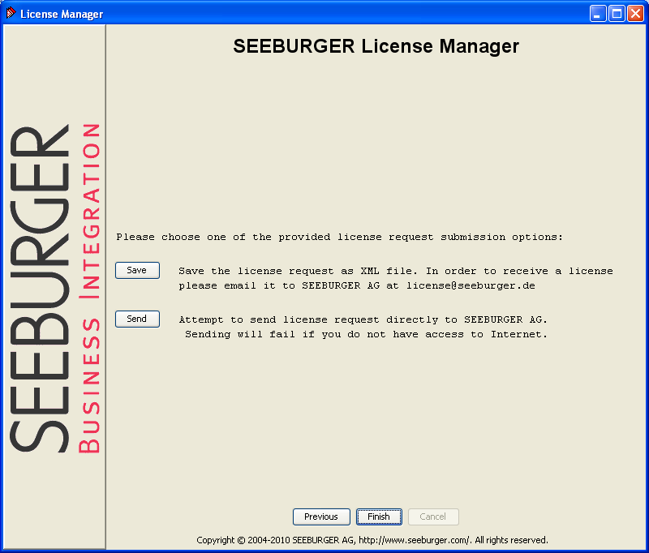

Previous
Previous  Table of Contents
Table of Contents 

Licence Request
|
Generally, the SEEBURGER License Manager is automatically installed and opened by the BIS/BICMD installation routine. If you have clicked on the button Exit after the installation routine because you want to apply for a license at a later point, you can locate and open the SEEBURGER License Manager via the files startLRF.bat, startLRF.sh, or SeeLicenseForm.exe in your product's bin/ directory (depending on the product and operating system). To create a request file, several information such as customer number or delivery note number must be provided. The request file can be sent to licence@seeburger.com. |
{kind=link}
-
In the Start dialog, click the Request License button. The License Request screen will be displayed: This screen lists all required information to create the corresponding license.
-
Enter the requested information, at least the field entries marked by the "*" (asterisk) symbol. Then click the Next button.
|
Field |
Meaning |
|---|---|
|
License Information |
|
|
License Type |
Choose between:
|
|
Product Information |
|
|
Product Name |
Select the type of product you have licenses from SEEBURGER. The list may contain one of the following options:
|
|
Product Version |
Pick a version identifier for the SEEBURGER product you are about to install. |
|
Platform |
Select the operating system and platform details of the installation environment for the SEEBURGER product. |
|
Bought from |
Choose SEEBURGER direct if you have purchased and received the software directly from the SEEBURGER. Use SEEBURGER Partner otherwise. |
|
Customer Information |
Please give as many contact details as possible, in order to ensure a reliable and fast flow of information and critical alerts between SEEBURGER and the contacts responsible for maintaining the installation. |
-
Click the Next button. A dialog is displayed that includes options for the request transmission.
 Transmission type selection - Select a transmission type:
Type
Function
Save
Saves the request as an XML file so that it can be sent via eMail to license@seeburger.de.
Send
Sends the request directly via eMail to SEEBURGER AG.
- SEEBURGER will verify your request. If it is approved you will receive a license key file (named *.lc) as an e-mail attachment.
{kind=link}